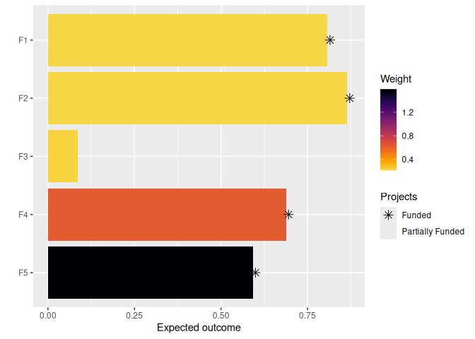

The oppr R package is decision support tool for prioritizing conservation projects. Prioritizations can be developed by maximizing expected feature richness, expected phylogenetic diversity, the number of features that meet persistence targets, or identifying a set of projects that meet persistence targets for minimal cost. Constraints (e.g. lock in specific actions) and feature weights can also be specified to further customize prioritizations. After defining a project prioritization problem, solutions can be obtained using exact algorithms, heuristic algorithms, or random processes. In particular, it is recommended to install the ‘Gurobi’ optimizer because it can identify optimal solutions very quickly. Finally, methods are provided for comparing different prioritizations and evaluating their benefits.
Installation
The latest official version of the oppr R package can be installed from the Comprehensive R Archive Network (CRAN) using the following R code.
install.packages("oppr", repos = "https://cran.rstudio.com/")Alternatively, the latest development version can be installed from GitHub using the following code. Please note that while developmental versions may contain additional features not present in the official version, they may also contain coding errors.
if (!require(remotes)) install.packages("remotes")
remotes::install_github("prioritizr/oppr")Citation
To cite the oppr R package in publications, please use:
Hanson JO, Schuster R, Strimas-Mackey M & Bennett JR (2019) Optimality in prioritizing conservation projects. Methods in Ecology & Evolution, 10: 1655–1663.
You can also use the following R code to determine which version you have installed: packageVersion("oppr")
Usage
Here we will provide a short example showing how the oppr R package can be used to prioritize funding for conservation projects. To start off, we will set the seed for the random number generator to ensure you get the same results as shown here, and load the oppr R package.
Now we will load some data sets that are distributed with the package. First, we will load the sim_features object. This table contains information on the conservation features (e.g. species). Specifically, each row corresponds to a different feature, and each column contains information associated with the features. In this table, the "name" column contains the name of each feature, and the "weight" column denotes the relative importance for each feature.
## # A tibble: 5 × 2
## name weight
## <chr> <dbl>
## 1 F1 0.211
## 2 F2 0.211
## 3 F3 0.221
## 4 F4 0.630
## 5 F5 1.59Next, we will load the sim_actions object. This table stores information about the various management actions (i.e. tibble). Each row corresponds to a different action, and each column describes different properties associated with the actions. These actions correspond to specific management actions that have known costs. For example, they may relate to pest eradication activities (e.g. trapping) in sites of conservation importance. In this table, the "name" column contains the name of each action, and the "cost" column denotes the cost of each action. It also contains additional columns for customizing the solutions, but we will ignore them for now. Note that the last action—the "baseline_action"—has a zero cost and is used with the a baseline project (see below).
## # A tibble: 6 × 4
## name cost locked_in locked_out
## <chr> <dbl> <lgl> <lgl>
## 1 F1_action 94.4 FALSE FALSE
## 2 F2_action 101. FALSE FALSE
## 3 F3_action 103. TRUE FALSE
## 4 F4_action 99.2 FALSE FALSE
## 5 F5_action 99.9 FALSE TRUE
## 6 baseline_action 0 FALSE FALSEAdditionally, we will load the sim_projects object. This table stores information about various conservation projects. Each row corresponds to a different project, and each column describes various properties associated with the projects. These projects correspond to groups of conservation actions. For example, a conservation project may pertain to a set of conservation actions that relate to a single feature or single geographic locality. In this table, the "name" column contains the name of each project, the "success" column denotes the probability of each project succeeding if it is funded, the "F1"–"F5" columns show the probability of each feature is expected to persist if each project is funded (NA values mean that a feature does not benefit from a project), and the "F1_action"–"F5_action" columns indicate which actions are associated with which projects. Note that the last project—the "baseline_project"—is associated with the "baseline_action" action. This project has a zero cost and represents the baseline probability of each feature persisting if no other project is funded. This is important because we can’t find a cost-effective solution if we don’t know how much better each project improves a species’ chance at persistence. Finally, although most projects in this example directly relate to a single feature, you can input projects that directly affect the persistence of multiple features.
## # A tibble: 6 × 13
## name success F1 F2 F3 F4 F5 F1_action
## <chr> <dbl> <dbl> <dbl> <dbl> <dbl> <dbl> <lgl>
## 1 F1_project 0.919 0.791 NA NA NA NA TRUE
## 2 F2_project 0.923 NA 0.888 NA NA NA FALSE
## 3 F3_project 0.829 NA NA 0.502 NA NA FALSE
## 4 F4_project 0.848 NA NA NA 0.690 NA FALSE
## 5 F5_project 0.814 NA NA NA NA 0.617 FALSE
## 6 baseline_project 1 0.298 0.250 0.0865 0.249 0.182 FALSE
## F2_action F3_action F4_action F5_action baseline_action
## <lgl> <lgl> <lgl> <lgl> <lgl>
## 1 FALSE FALSE FALSE FALSE FALSE
## 2 TRUE FALSE FALSE FALSE FALSE
## 3 FALSE TRUE FALSE FALSE FALSE
## 4 FALSE FALSE TRUE FALSE FALSE
## 5 FALSE FALSE FALSE TRUE FALSE
## 6 FALSE FALSE FALSE FALSE TRUEAfter loading the data, we can begin formulating the project prioritization problem. Here our goal is to maximize the overall probability that each feature is expected to persist into the future (i.e. the feature richness), whilst also accounting for the relative importance of each feature and the fact that our resources are limited such that we can only spend at most $400 on funding management actions. Now, let’s build a project prioritization problem object that represents our goal.
# build problem
p <- problem(
projects = sim_projects, actions = sim_actions,
features = sim_features, project_name_column = "name",
project_success_column = "success", action_name_column = "name",
action_cost_column = "cost", feature_name_column = "name"
) %>%
add_max_richness_objective(budget = 400) %>%
add_feature_weights(weight = "weight") %>%
add_binary_decisions() %>%
add_default_solver(verbose = FALSE)
# print problem
print(p)## Project Prioritization Problem
## actions: F1_action, F2_action, F3_action, ... (6 actions)
## projects: F1_project, F2_project, F3_project, ... (6 projects)
## features: F1, F2, F3, ... (5 features)
## action costs: continuous values (between 0 and 103.226)
## project success: proportion values (between 0.814 and 1)
## objective: maximum richness objective
## targets: none specified
## weights: feature weights
## constraints: none specified
## decisions: binary decision
## solver: gurobi solverNext, we can solve this problem to obtain a solution. By default, we will obtain the optimal solution to our problem using an exact algorithm solver (e.g. using Gurobi or lpSolveAPI).
# solve problem
s <- solve(p)
# print solution
print(s, width = Inf)## # A tibble: 1 × 21
## solution status cost obj F1_action F2_action F3_action F4_action F5_action
## <int> <chr> <dbl> <dbl> <dbl> <dbl> <dbl> <dbl> <dbl>
## 1 1 OPTIMAL 395. 1.75 1 1 0 1 1
## baseline_action F1_project F2_project F3_project F4_project F5_project
## <dbl> <lgl> <lgl> <lgl> <lgl> <lgl>
## 1 1 TRUE TRUE FALSE TRUE TRUE
## baseline_project F1 F2 F3 F4 F5
## <lgl> <dbl> <dbl> <dbl> <dbl> <dbl>
## 1 TRUE 0.808 0.865 0.0865 0.688 0.592The s table contains the solution and also various statistics associated with the solution. Here, each row corresponds to a different solution. Specifically, the "solution" column contains an identifier for the solution (which may be useful for methods that output multiple solutions), the "obj" column contains the objective value (i.e. the expected feature richness for this problem), the "cost" column stores the cost of the solution, and the "status" column contains information from the solver about the solution. Additionally, it contains columns for each action ("F1_action", "F2_actions", "F3_actions", …, "baseline_action") which indicate if each action was prioritized for funding in the solution. Additionally, it contains columns for each project ("F1_project", "F2_project", "F3_project", …, "baseline_project") that indicate if the project was completely funded or not. Finally, it contains column for each feature ("F1, "F2", "F3, …) which indicate the probability that each feature is expected to persist into the future under each solution (for information on how this is calculated see ?add_max_richness_objective). Since tabular data can be difficult to understand, let’s visualize how well this solution would conserve the features. Note that features which benefit from fully funded projects, excepting the baseline project, are denoted with an asterisk.
# visualize solution
plot(p, s)
This has just been a taster of the oppr R package. For more information, see the package vignette.
Getting help
If you have any questions about using the oppr R package or suggestions for improving it, please file an issue at the package’s online code repository.